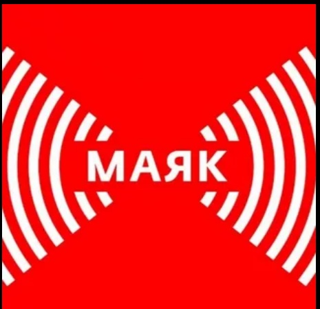
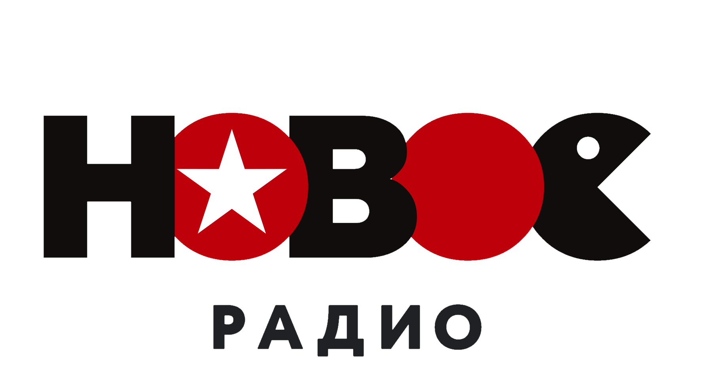
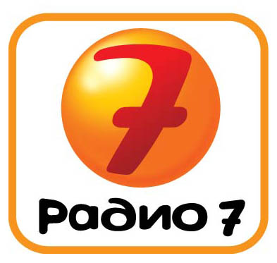
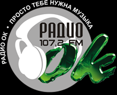
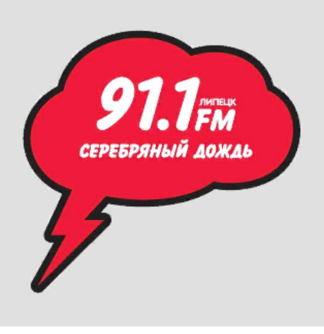

Радио России 69.32 УКВ и 99.70 FM Радио Звезда 95.70 FM Детское Радио 96.10 FM Радио Дача 96.50 FM Радио День 96.90 FM Studio21 97.30 FM Вести FM 97.70 FM  |
Маяк 99.10 FM Юмор FM 100.70 FM Родное Радио 100.70 FM Дорожное Радио 101.50 FM Авторадио 102.00 FM Радио Вера 102.50 FM Радио Православная Рязань 102.50 FM Европа Плюс 103.20 FM Energy 104.10 FM  |
Новое Радио 104.50 FM  |
Радио 7 105.00 FM Love Радио 100.70 FM Ретро FM 105.40 FM Радио Шансон 104.80 FM Радио Мир 105.30 FM Радио 1 106.50 FM не вещает Радио Калина Красная 106.70 FM  | Радио ОК 107.20 FM Русское 107.90 FM  |
Серебрянный дождь 102.50 FM Скачать плейлист m3u Скачать плейлист aimppl4 Скачать плейлист pls |